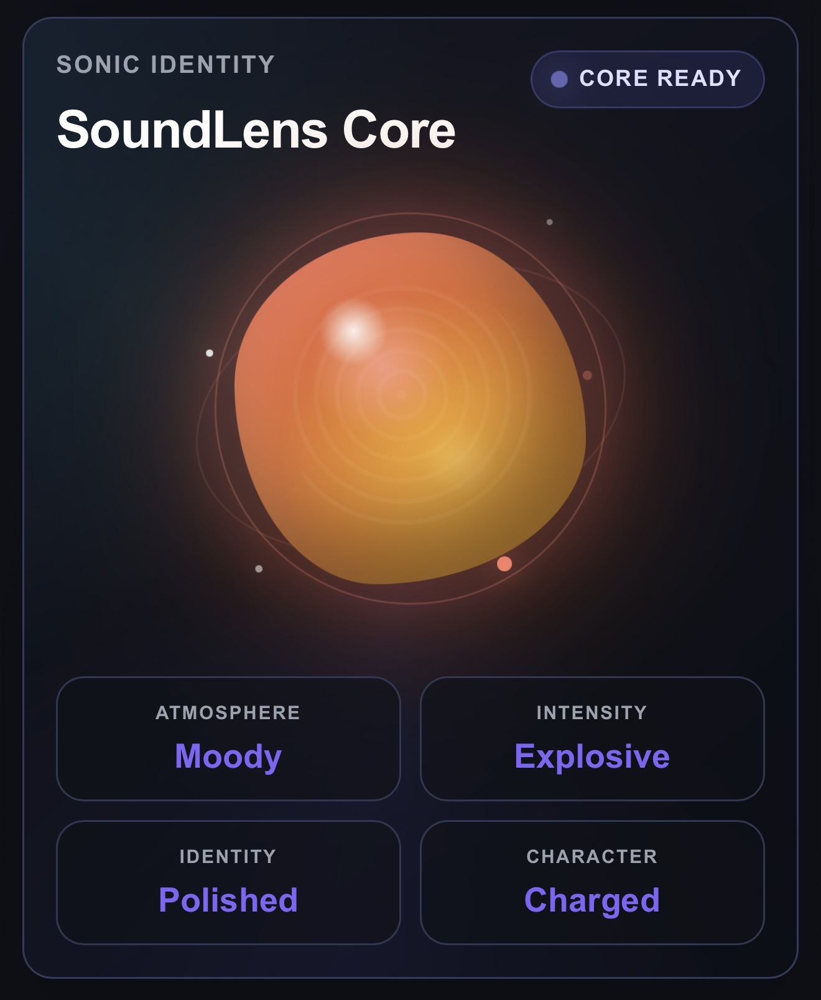
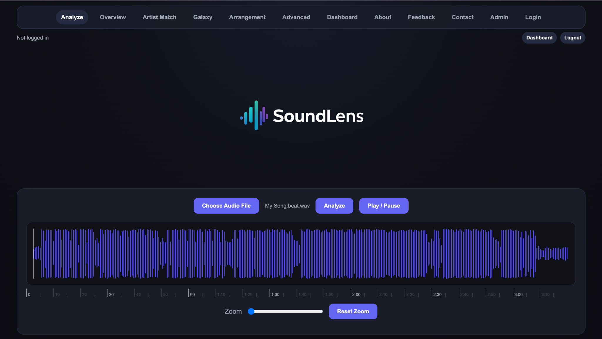
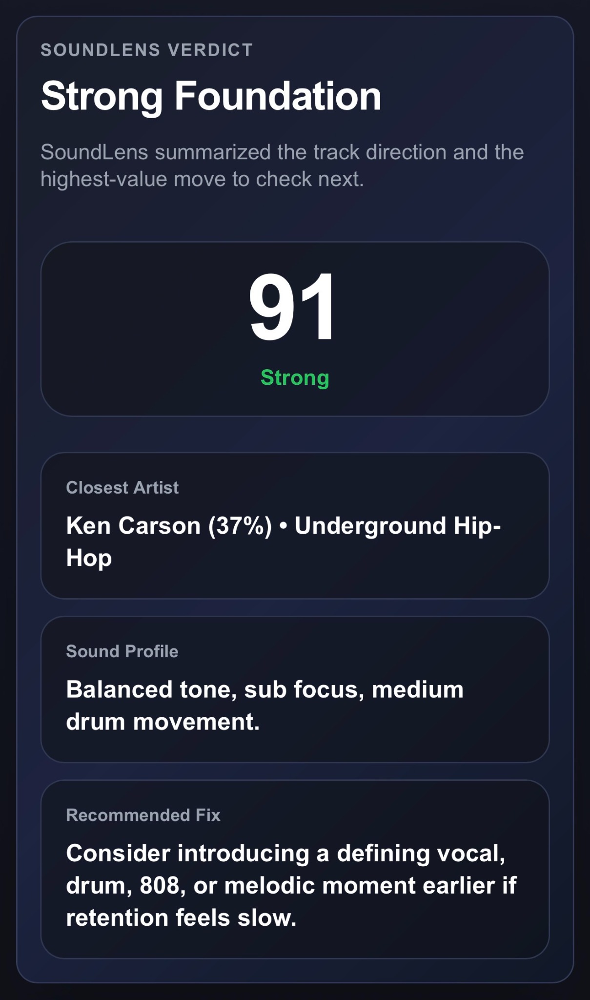
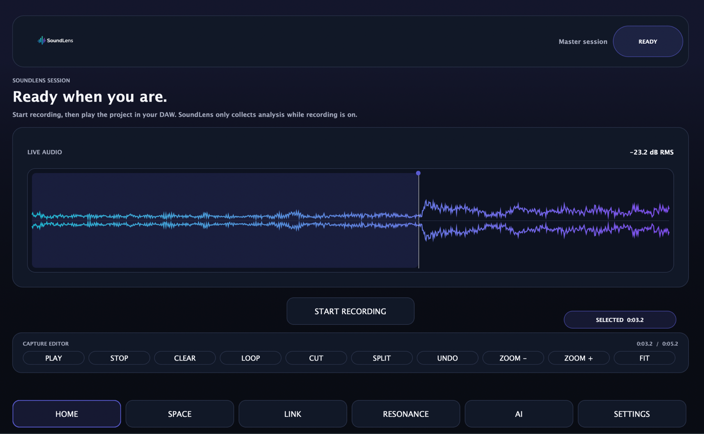
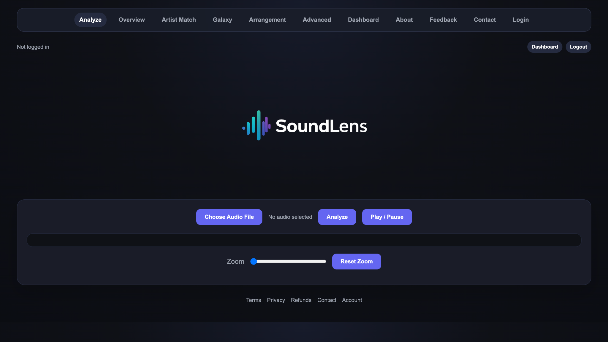
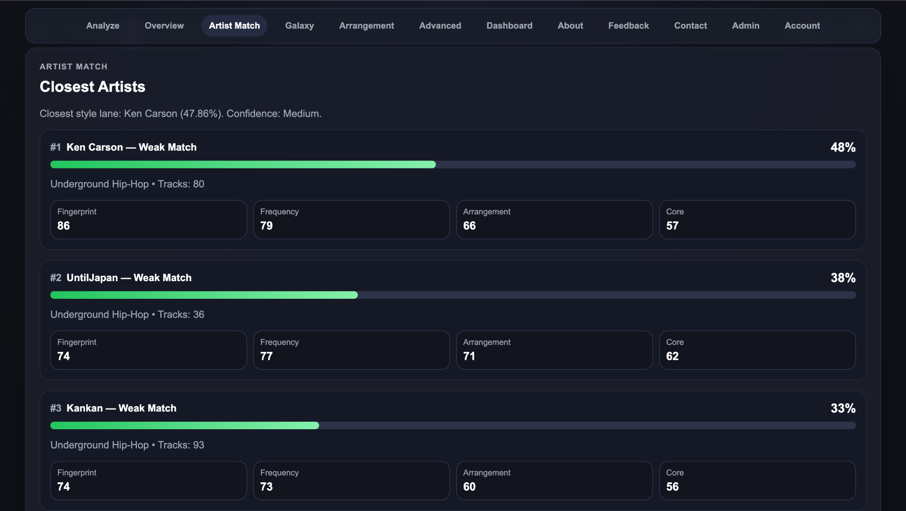
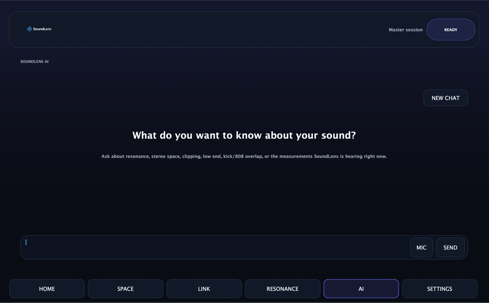
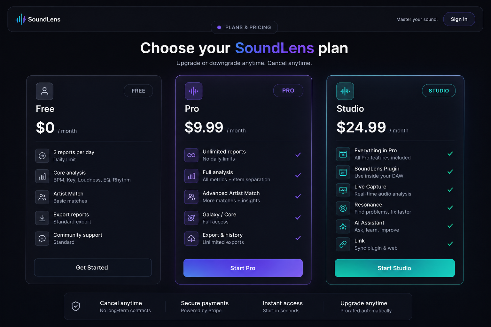
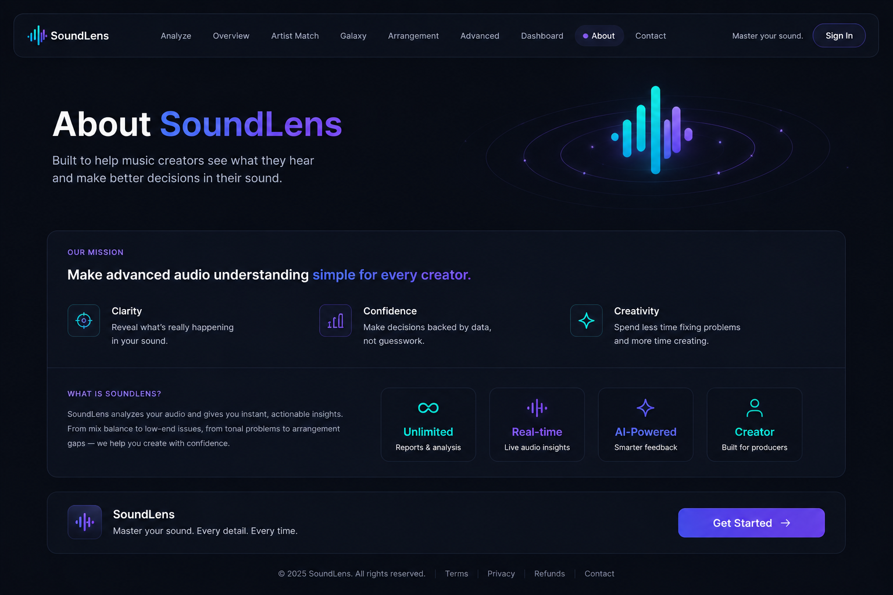

See your sound differently.
A connected music platform for analyzing, understanding and improving your sound.



Deep audio insights instantly.
Find your closest underground artists.
Understand your sonic identity at a glance.
Get smart recommendations to level up.
SoundLens inside your DAW.
Capture what you're hearing, inspect it in real time, and keep SoundLens beside the session while you work.

Take the analysis deeper.
Upload a track or send it straight from the plugin, then move from the waveform into the full SoundLens report.

Understand where your sound fits.
Compare the track against the SoundLens artist database and see which sonic lanes are closest to your own.

Ask better questions about your audio.
Ask SoundLens about resonance, stereo space, clipping, low end, overlap, and the measurements it is hearing.

One SoundLens account.
Your analyzer, reports, linked plugin and future SoundLens products live under the same account.

Built around how music actually gets made.
SoundLens connects the work happening inside the DAW with deeper analysis, saved reports and artist context outside it.
